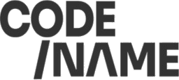

Facturas hoy, cobras en 60 días
Mientras tanto pagas sueldos, proveedores e impuestos con plata que todavía no tienes.
Contabilidad, administración financiera y back-office
Tú no necesitas saber cuánto me demoro. Necesitas saber que tus trabajadores reciben su sueldo a tiempo, que el F29 y Previred están pagados, y que el contador tiene todo para cerrar.
Algunas empresas que han confiado en mí

Lo que vemos siempre
Cuéntame qué tipo de negocio tienes y te muestro lo que suele estar pasando.
Servicios, distribución, tecnología, contratistas: vendes a otras empresas y cobras con factura.
Mientras tanto pagas sueldos, proveedores e impuestos con plata que todavía no tienes.
Y nadie tiene tiempo de hacerles seguimiento hasta que la caja ya está en rojo.
Tienen fecha fija. Tus cobros no. Esa diferencia es donde se aprieta todo.
Más ventas a plazo significa más plata en la calle. Crecer sin control cuesta caro.
Alguien tiene que pagar, cobrar, cuadrar y tener los papeles listos antes del cierre.
El F30-1 del mandante, el certificado para el banco, la carpeta de la licitación.
La del negocio y la de la casa salen de la misma cuenta. No sabes si ganas o pierdes.
Vendes con IVA incluido, se usa como caja, y el F29 llega sin plata para pagarlo.
No sabes cuánto te quitan Transbank, Getnet o Mercado Pago, ni si te abonaron todo.
Efectivo, tarjeta y transferencias no calzan con lo que vendiste.
Vendes mucho de algo que casi no te deja nada, y no lo sabes.
Sacas cuando puedes. Eso descuadra el negocio y tu casa al mismo tiempo.
“Nos quitaba mucho tiempo y foco del producto. Tati nos devolvió ese tiempo y nos ha ayudado a no tener multas. Al final todo eso se traduce en plata.”Benjamín Martínez · COO de MIIDO
Cómo trabajamos
Primero entiendo tu operación y te entrego un plan por escrito. Después decides tú cuánto de ese plan hago yo.
Reviso el estado real de tu administración y te entrego un informe escrito con los riesgos detectados y un plan priorizado: qué hacer, en qué orden y quién lo hace. Termina con una reunión de 60 minutos para revisarlo contigo.
4 UF micro · 6 UF pyme · pago único
El informe se entrega siempre, contrates o no lo que viene después. Si contratas dentro de 60 días, se descuenta completo.
Con el plan en la mano, decides cuánta pega se va de tu escritorio.
Contabilidad
Soy contador auditor: declaraciones, libros y cierre anual. Puede ir junto con tu plan o contratarse sola.
La contabilidad va con la operación del mes a mes: una sola persona a cargo de las dos cosas y un solo interlocutor.
Si ya tienes resuelto el back-office y lo que falta es quien declare, lleve los libros y cierre el año, se contrata sola.
Me hago cargo del traspaso: carpeta tributaria, claves, cierre del período con el anterior y puesta al día.
Con plan o sin plan. Desde 3 UF al mes. El valor final depende del tamaño de tu empresa, el giro y el volumen de documentos.
Para cotizar la contabilidad no necesitas hacer el diagnóstico. Con una revisión corta de tu situación en el SII —régimen, documentos al mes, cómo vienen los períodos anteriores— te doy un valor.
Planes mensuales
Cada plan se define por lo que dejas de hacer tú, y cubre un tamaño de negocio conocido de antemano.
¿Tu negocio es más chico que esto?
Para empresas de hasta 1 trabajador y 10 facturas al mes. F29, una cuenta o caja cuadrada, vencimientos avisados y un reporte mensual de una página. Una reunión de 30 minutos cada seis meses.
Cuesta menos porque trabajo estos casos en lote: días fijos del mes, el mismo formato para todos, sin urgencias ni personalización. No incluye cobranza, flujo de caja ni paquete de documentos; eso parte en el Básico. Si contratas a un segundo trabajador o pasas las 10 facturas, el plan sube.
El tope no limita el servicio: define el tamaño de negocio que el plan cubre. Si creces, ajustamos el plan contigo y con aviso previo.
Hagamos la cuenta
La comparación correcta no es contra un contador: es contra lo que te cuesta tener a alguien adentro.
Sueldos medios según Computrabajo Chile, 2026. Planes a costo total, con IVA incluido.
Incluido desde el plan Crece
El problema casi nunca es cuánto entra: es que todo entra al mismo bolsillo y se gasta sin saber de dónde salió. Cada peso que llega se reparte el mismo día.
Estos porcentajes son un ejemplo. Los tuyos salen de tu flujo real: los definimos juntos en el plan y después reviso mes a mes que se estén respetando.
Cotiza tu caso
Cuéntame el tamaño de tu operación y te muestro el plan que te corresponde y en cuánto queda. Es una estimación: el valor final se confirma con el diagnóstico.
Estimación referencial con la UF a $40.800. Los valores de los planes son netos; se les suma el IVA.
A la carta
No se cobran horas: se cobra el encargo. Sabes cuánto cuesta antes de pedirlo y nadie discute tiempos.
Lo que no esté en esta lista se cotiza como encargo cerrado, con precio y plazo definidos antes de empezar. Nunca abierto. Mínimo por encargo: 1 UF.
A medida
No todos los negocios entran en un plan, y algunos todavía ni siquiera son una empresa. Estas son tres salidas que uso seguido.
Si entras junto a otro negocio —un socio, un amigo con su propia empresa, tu proveedor— las dos quedan con 10% de descuento, en cualquier plan, y lo mantienen mientras las dos sigan activas. Cada una firma lo suyo y paga lo suyo, con sus documentos y sus accesos por separado.
Una empresa nunca ve los números de la otra.
Constitución, RUT, inicio de actividades y facturación electrónica. Tres formas de hacerlo, según cuánto quieras meter las manos:
Si tu caso no se parece a ninguno de los anteriores, escríbeme igual. En media hora sabemos por dónde empezar y qué es lo primero que hay que ordenar.
Y si no soy yo quien te sirve, te lo digo.
Confianza
Tres cosas que conviene dejar claras antes de empezar a trabajar juntos.
Dentro de 24 horas hábiles, por un solo canal acordado. No siempre es al instante, pero ninguna consulta queda sin respuesta.
Procesos, calendario de vencimientos y accesos quedan documentados. Los accesos son tuyos: nada queda amarrado a mí.
Yo preparo los pagos; tú los apruebas o firmas en el banco. Nunca se mueve un peso sin tu visto bueno, y cada pago queda registrado.
Cuando un empleado renuncia, se lleva lo que sabe. Acá todo queda por escrito y en tus manos.
Quién soy
Soy ingeniero comercial con especialidad en recursos humanos y contador auditor, con más de 15 años de experiencia en finanzas, contabilidad y recursos humanos, en empresas de todos los tamaños. Hoy trabajo con pymes, startups y negocios de comercio y servicios en Chile.
Trabajo con empresas que venden bien, pero que no tienen tiempo para perseguir facturas, calcular sueldos, cuadrar Previred o saber cuánta plata van a tener el próximo mes. Hoy acompaño a empresas de rubros muy distintos, desde tecnología hasta servicios y contratistas agrícolas, y en todas veo lo mismo: el problema casi nunca es vender poco, es no tener los números a la vista.
Mi objetivo es que sepas cuánto ganas, que cumplas sin sustos y que tu negocio ahorre para crecer con plata propia.
Clientes
“Los emprendedores generalmente queremos hacerlo todo, pero hay que enfocarse en lo que genera valor, y la administración es demasiado importante como para hacerla a medias.
A nosotros nos quitaba mucho tiempo y foco del producto, que es donde teníamos que estar. Tati es muy proactiva: nos devolvió ese tiempo, nos permitió enfocarnos y nos ha ayudado a no tener multas. Al final todo eso se traduce en plata.”
“Antes tenía que hacerla yo. Estaba desordenada, era caótico, y siempre tenía miedo. Ahora ya no: estoy seguro de que estamos dando los pasos correctos, que manejamos todo de la forma más ordenada posible, sin multas y sin riesgo, porque Tati se hace cargo.
En la declaración de renta siempre está ahí para ayudarnos a optimizar y a pagar lo justo. Si lo estás dudando, hazlo sin pensarlo: es algo que tienes que tener si quieres tener una empresa, y la mejor forma es delegarlo a alguien que sabe y que no la va a embarrar.”
“Cuando partí hacía todo yo y vivía apagando incendios: el F29 a última hora, las comisiones que nunca cuadraban, los proveedores esperando. Con Tati eso se acabó.
No es que me ayudara con la administración: la administración era de ella. Yo vendía, y cada mes sabía exactamente cuánto entraba, cuánto salía y cuánto me quedaba.”
Preguntas frecuentes
El siguiente paso
En dos o tres semanas vas a tener claro qué está fallando, qué es urgente y cuánto cuesta resolverlo. Con eso en la mano, decides tú cuánto de la pega se va de tu escritorio.
¿Lo que necesitas es contador? Escríbeme igual: eso se cotiza sin pasar por el diagnóstico.
También por correo: [TU CORREO AQUÍ]